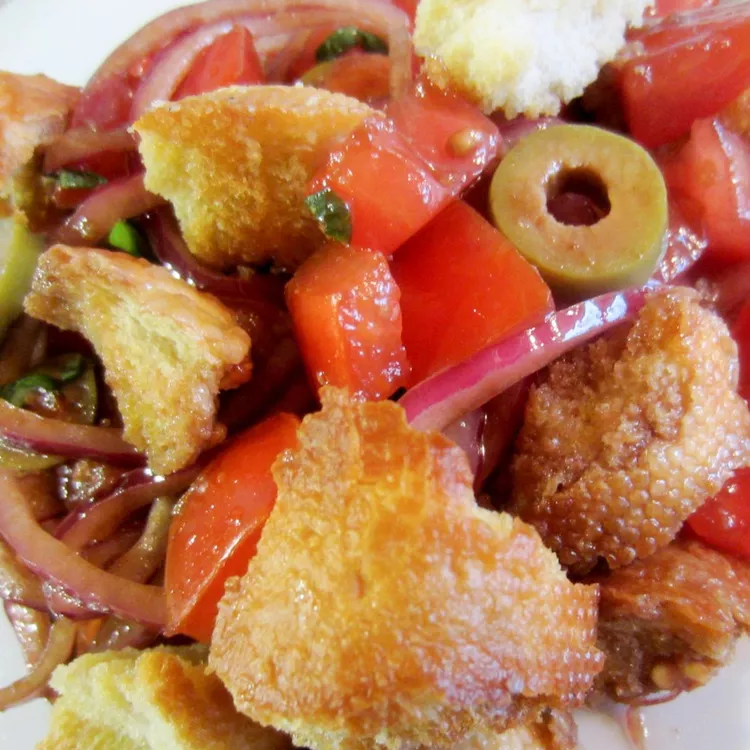

Panzanella Salad

Description
Panzanella is an Italian bread, tomato, and red onion salad that is packed with flavor and different textures. I love to add mozzarella cheese and olives.
Ingredients
- Lime juice
- ¾ cup sliced red onion
- 10 basil leaves, shredded
- ½ cup pitted and halved green olives
- 1 cup fresh mozzarella, cut into bite-size pieces
Steps:
- Preheat the oven to 400 degrees F (200 degrees C).
- Toss bread with 1/3 cup olive oil, salt, pepper, and garlic in a large bowl; arrange on a baking sheet and toast in the preheated oven until golden, about 5 to 10 minutes. Transfer bread back into the bowl and set aside to cool slightly.
- Gently combine watermelon, cucumber, feta cheese, and cilantro in a large bowl; season with black pepper.
- Toss salad with marinated onions and season with sea salt just before serving.
- Serve and enjoy!